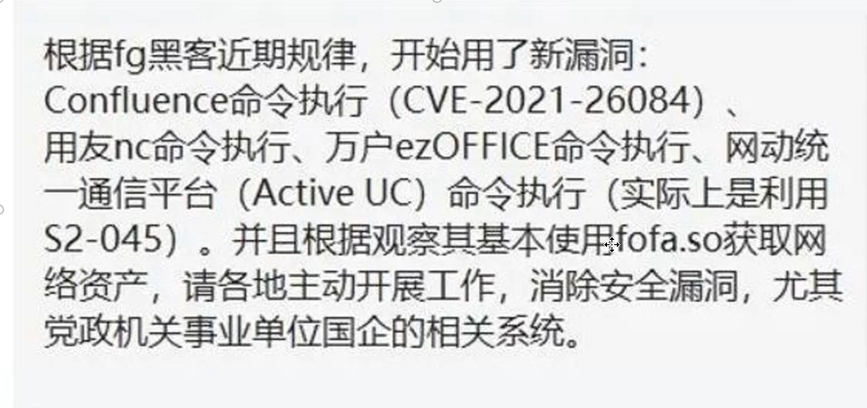
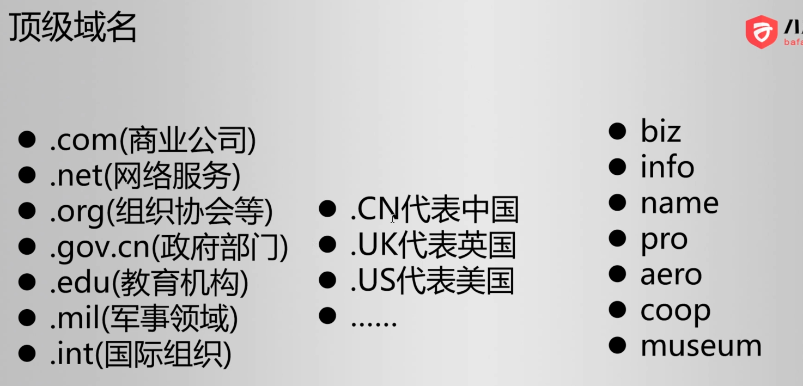
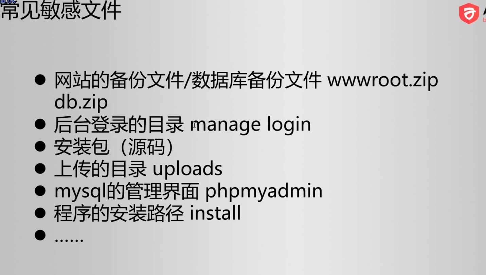

2023-02-25
Kali信息收集
- 资产搜集综合工具
- Maltego: 强大的跨平台信息搜集工具(可以自动搜集资产)
- ARL灯塔: 搜集
- yakit: 搜集出来还会尝试分析有没有漏洞 (单兵系统)
- goby: 搜集
- ...
流程
- 信息收集概述
- 网络空间测绘
- 端口扫描
- 子域名暴破
- 目录扫描
- CMS系统指纹识别
信息收集概述
不提前收集可能会遗漏一些方面
比如子域名没收集到
- 收集的内容
- 域名
- IP
- 端口
- CMS指纹
- 通过搜索引擎收集信息(google dork)
- 网络空间测绘
- 目录扫描
- ...
网络空间测绘
- 网络空间(Cyberspace)
- WiIIiam Gibson《Neuromancer》1984
- 网络空间搜索引擎（测绘）
注解
不是指搜索引擎搜索到的HTML, 而是指整个网络世界空间, 比如网关, 摄像头, Web框架, 基站 (一般叫做资产)
常见的搜集平台:
# 世界上第一个网络空间搜索引擎 https://www.shodan.io/ # 钟馗之眼 https://www.zoomeye.org/ # 国内被封了, 因为很多人在这上搜集信息 http://fofa.so/ # fafo新地址 https://fofa.info/ # 360 夸克 https://quake.360.net/quake/#/index # 奇安信 鹰图 https://hunter.qianxin.com/
漏洞总结的地址(会给你最新漏洞以及在搜集平台搜索的语法):
# 佩奇 (被封) http://wiki.peiqi.tech/

fofa被封
端口扫描
- 端口与服务的关系
- 常见端口号
端口范围:
0 - 65535
大多数人对于常用开源的项目使用的端口都是默认的, 比如 mysql 默认是 3306, 一般不会改为其他的如 8888
端口扫描工具:
- nmap : 网络界的瑞士军刀
子域名暴破
域名

顶级域名
- 子域名
- 使用子域名更省钱
在线子域名爆破网站:
https://dnsdumpster.com/
目录扫描
对于每一个服务器, 扫描上面开放的内容
- 为什么要扫描
- 可能会存在敏感文件

常见敏感文件